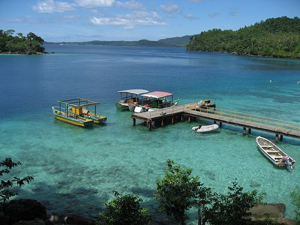

Explore Sabang
Sabang City is located on Pulau Weh which is located at the tip of Sumatra Island and is a free economic zone and the westernmost region of Indonesia.
Tourist Attractions
Indonesian 0 KM Monument
The 0 KM Monument is a monument marking the zero point in Indonesia. The monument is located in Iboih Village, 29 km from Sabang city. You can take photos at this monument as proof that you have set foot on Indonesia's 0 point.
Rubiah Island
Rubiah Island is often called the paradise of the underwater kingdom, this is because the underwater beauty of Rubiah Island is still very beautiful and well maintained, making various kinds of marine biota, coral reefs and underwater ecosystems very beautiful.
Sarang Cave Tour
Sarang Cave is one of the caves in Sabang which is famous for its beauty. This cave itself is on the edge of the sea and consists of four cave mouths. From Sarang Cave you can see the blue sea water that goes straight to the Indian Ocean as well as the cluster of small islands that surround Sarang Cave.
Iboih Dive Center
IDC is a strategic and very comfortable place. In the surrounding area there are local restaurants, retail shops and souvenir shops. For lovers of the seabed, don't worry about it because IDC can take you to the seabed safely and most importantly, you can enjoy the atmosphere at the bottom of the sea.
Aneuk Laot Lake
Lake Aneuk Laot, which in Indonesian means Child of the Sea, has an area of approximately 30 hectares. According to local residents, this lake was given this name because this lake is like a small ocean that is separate from the open sea that surrounds Weh lake.
Ticket Information & Contacts
| Destination | Ticket Price (IDR) | Contact |
|---|---|---|
| Indonesia 0 KM Monument | IDR 25,000 | 085237861239 |
| Rubiah Island | Free | 082345679810 |
| Sarang Cave Tour | IDR 10,000 | 082351176812 |
| Iboih Dive Center | Free | 082364755589 |
| Aneuk Laot Lake | IDR 20,000 | 085213677798 |